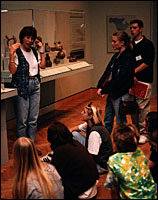

|
 Classes for Adults and Children Classes, studio activities, and one-day seminars focus on both the permanent collection and special exhibitions. Family Programs The Minneapolis Institute of Arts offers Family Day programs and Films in conjunction with special exhibitions. The Minneapolis Institute of Arts offers a variety of teacher and docent led tours covering both the permanent collection and special exhibitions. Interactive Multimedia Programs Interactive computer programs and audio stations allow museum visitors to explore the art, music, literature, history and current events of specific cultures and time periods. The Minneapolis Institute of Arts offers many volunteer internships for individuals considering or pursuing careers in museum work. There are many ways to get involved with the Minneapolis Institute of Arts. Find out more about the Friends, the Docent Program, Job Opportunities and more.
Send comments to the webmaster.
|